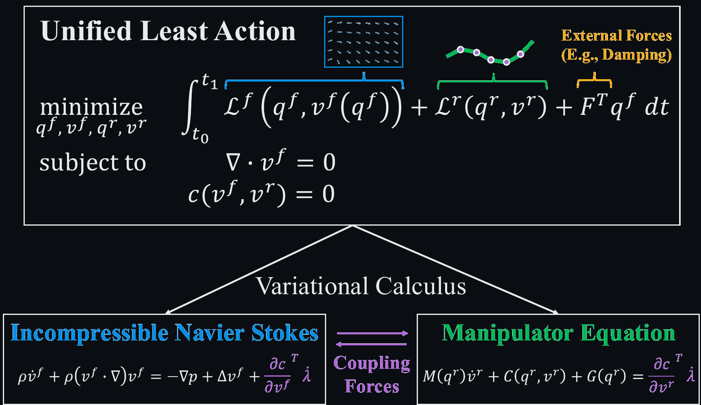
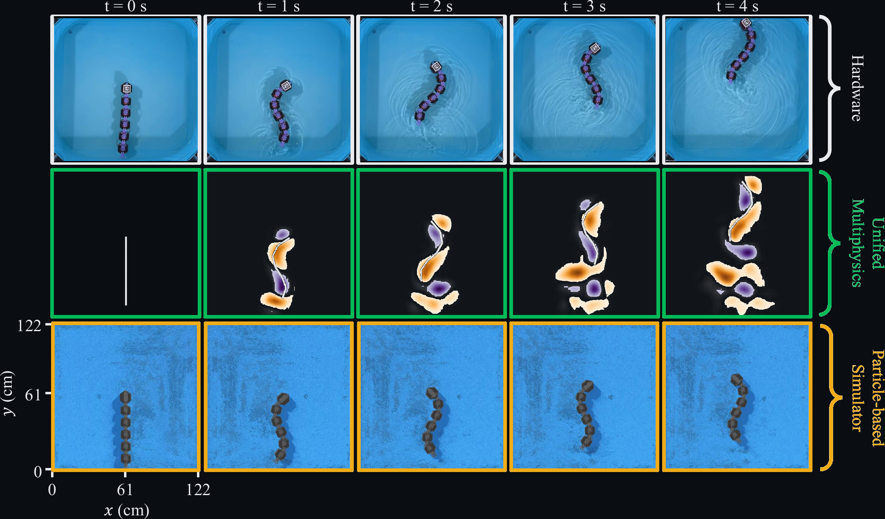
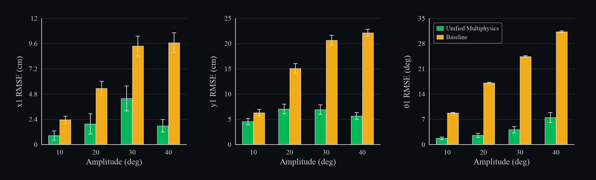
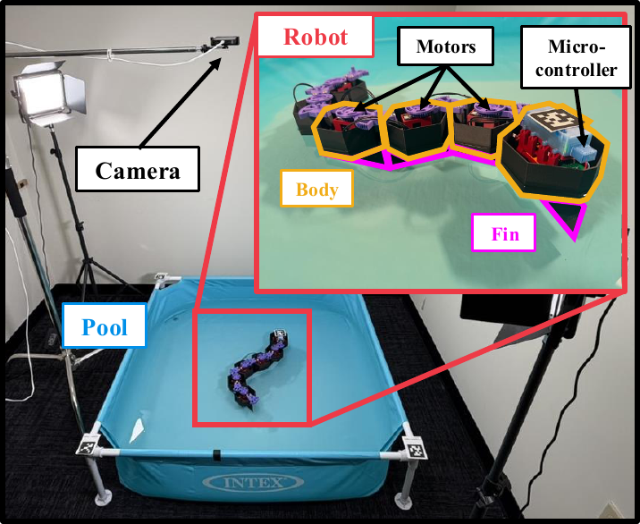

Optimized C-start escape maneuver on a multi-link eel robot across t = 0–3 s.
Hardware (top) is closely tracked by our
unified multiphysics simulator (middle), while the
particle-based simulator (bottom) fails to complete the intended 90° turn.
Abstract
Matching the swimming efficiency and agility of fish has remained an elusive goal in underwater robotics. Such locomotion relies on complex vortex interactions between the robot's body and the surrounding fluid, governed by coupled ordinary and partial differential equations — significantly more difficult than the multi-body dynamics of classical rigid robotic systems.
We present a differentiable framework for simulating strongly coupled fluid-robot multiphysics as a unified optimization problem. The coupled manipulator and incompressible Navier–Stokes equations are derived together from a single Lagrangian using the principle of least action. We employ discrete variational mechanics to derive a stable, well-conditioned, and physically accurate scheme for jointly simulating articulated bodies and the surrounding fluid, and leverage the implicit function theorem to compute derivatives through the fully coupled dynamics.
Using this simulator and its gradients, we realize undulating swimming gaits and optimize a highly dynamic C-start escape maneuver for a bioinspired eel robot. We validate both gaits on physical hardware, demonstrating successful sim-to-real transfer.
Method
Existing multiphysics simulators time-integrate the fluid and robot equations separately, then couple them through an explicit force term. We instead pose the entire problem as a single least-action optimization: the unified Lagrangian is discretized directly, and the coupling forces emerge as Lagrange multipliers of a no-slip constraint.

The unified Lagrangian governing the coupled fluid–robot dynamics. Variational calculus on the combined action recovers the incompressible Navier–Stokes and manipulator equations; the multiphysics coupling stems from a single constraint enforcing no-slip at the fluid–robot interface.
1.From least action to the manipulator equation
For a system with configuration $q(t)\in\R^n$, velocity $v(t)\in\R^m$, kinetic energy $T(v)$, and potential energy $U(q)$, the principle of least action poses the dynamics as a continuous-time optimization problem:
which in robotics is more familiar as the manipulator equation
$\;M(q)\ddot q + C(q,\dot q)\dot q + G(q) = 0.$
The least-action principle generalizes to dissipative systems via Lagrange–D'Alembert, to non-trivial kinematics $v=f(q,\dot q)$, and to additional constraints $c(q,v)=0$:
where $\rho$ is fluid density, $\mu$ its dynamic viscosity, $\Omega$ the fluid domain with boundary $\partial\Omega$, $\Gamma$ the robot geometry with boundary $\partial\Gamma$, and $M^r$ the robot mass matrix. Damping enters via the viscous term $F(t)=\int_\Omega \mu\,\Delta v^f\, dV$. The full multiphysics is then a single constrained optimization over fluid and robot states:
Constraints $c_1\!-\!c_4$ are the standard kinematic and conservation conditions; $c_5$ encodes joint constraints; $c_6$ is the no-slip condition at the fluid-robot interface and is the only coupling between the two physics.
Forming the action $S = \int (L^f + L^r + F^\top q^f + \sum_{i=1}^6 \lambda_i c_i)\, dt$ and taking variations w.r.t. $(q^f,v^f)$ and $(q^r,v^r)$ recovers the coupled incompressible Navier–Stokes and manipulator equations:
The orange terms in (7) and (9) share the same dual variable $\lambda_6$. The pressure $p \equiv \dot\lambda_2$ is itself the multiplier that enforces $\nabla\!\cdot v^f=0$ — a fact Lagrange noted in his Mécanique analytique. Boundary conditions and the no-slip interface inherit the same constraint-with-dual-variable structure that Allmaras (2005) used for compressible aerodynamics.
3.A variational integrator that handles the temporal lag
Discretizing the action in time is delicate. A midpoint quadrature gives a discrete Lagrangian
$L_d(q_k,q_{k+1}) = h\,L\!\left(\tfrac{q_k+q_{k+1}}{2},\,\tfrac{q_{k+1}-q_k}{h}\right)$
in which the velocity $\bv_k$ lives between the configurations $q_k$ and $q_{k+1}$. For pure rigid-body simulation this half-step delay is harmless. For our problem it is not: the fluid is represented as a velocity field $\bv^f$ while the robot pose lives in $q^r$, and the no-slip constraint must couple them at a consistent time.
Marsden & West (2001) resolve this via the discrete Legendre transform, which is awkward in the presence of constraints. We instead define every constraint at the time step at which its variable naturally lives ($q_k$ for the robot, $\bv_k$ for the fluid), and rewrite the discrete Euler–Lagrange relation directly via the chain rule:
Substituting these back into the discrete Euler–Lagrange equation produces, after some algebra, two coupled update rules — one for the robot, one for the fluid — that are simultaneously solved each time step. With $\bv^r_{k+1}$ and $\bv^f_{k+1}$ as unknowns:
$$\begin{aligned}
\tfrac{1}{2}(M^f - \mu h L)\bv^f_{k+1}
&- \tfrac{h}{2} N(\bv^f_{k+1})
+ \color{#b690d4}{G\, p_k}
+ B\,\lambda_{3,k}
\color{#f0a45e}{- h\!\left(\tfrac{\partial c_6}{\partial \bv^f_k}\right)^{\!\!\top}\!\lambda_{6,k}} \\
&\quad = \tfrac{1}{2}(M^f + \mu h L)\bv^f_k + \tfrac{h}{2}N(\bv^f_k) - h M^f g
\end{aligned}$$
(13)
Together with the discrete constraints
$G^\top \bv^f_{k+1}=0$ (incompressibility),
$B\bv^f_{k+1}=v_{bc}$ (boundary),
$\bar E\,\bv^f_{k+1} = {}^b\bv^r(\bv^r_{k+1})$ (no-slip),
and $c_5(q^r_{k+1})=0$ (joints),
the system forms a sparse nonlinear root-finding problem solved by Newton's method. The resulting scheme is a 2nd-order implicit leap-frog integrator, and derivatives through it are obtained from the implicit function theorem.
Spatial discretization — finite-volume operators
The fluid domain is discretized with a second-order finite-volume scheme yielding the following discrete counterparts of the continuous operators that appear in the Navier–Stokes equations:
$\;\int_\Omega \rho v^f\, dV \mapsto M^f v^f,\quad
\int_\Omega \nabla p\, dV \mapsto Gp,\quad
\int_\Omega (v^f\!\cdot\!\nabla)v^f\, dV \mapsto N(v^f),\quad
\int_\Omega \Delta v^f\, dV \mapsto Lv^f.$
$M^f$ is the lumped fluid mass matrix, $G$ the discrete gradient, $N(\cdot)$ the (nonlinear) convection operator, and $L$ the discrete Laplacian. $B$ extracts cells on $\partial\Omega$.
4.An integral-form immersed boundary for multibody robots
The classical immersed-boundary method enforces no-slip pointwise:
$\;\int_\Omega v^f\,\delta(q^f-{}^bq^r)\, d\Omega = {}^bv^r,\;$
discretized as $\;E v^f - {}^bv^r = 0,\;$ with a convolution matrix $E$ built from a smoothed delta. This satisfies no-slip only at a finite set of boundary nodes — allowing fluid penetration when nodes are sparse, and producing redundant, ill-conditioned constraints when nodes from neighboring bodies overlap. Both pathologies are common in articulated robots.
We instead integrate the constraint along the whole boundary $\Gamma$:
Discretizing with piecewise-linear interpolation along the boundary and integrating the smoothed delta along each segment yields a new convolution matrix $\bar E$:
$$\bar E\, v^f - {}^bv^r(v^r) \;=\; 0$$
(15)
Unlike the pointwise form, $\bar E$ stays well-conditioned when boundary nodes overlap, and the constraint is satisfied between nodes rather than only at them. Differentiating through (15) inside (12)–(13) gives the multibody-friendly coupling we use throughout the paper.
5.Contributions
A unified derivation of strongly coupled fluid-robot multiphysics via the principle of least action.
A new weak formulation of the no-slip boundary constraint at the fluid-robot interface.
A differentiable fluid-robot multiphysics simulator.
Realization of accurate, dynamic robotic swimming on a bioinspired eel robot with validation against real-world hardware.
Results
Steady undulatory swimming
We drive each joint with a phase-shifted sinusoid to produce a traveling wave at 1 Hz with body wavelength $\lambda = L_B$. Across joint amplitudes from 10° to 40° (20 trials each), our method consistently tracks hardware while the SPH baseline drifts — the gap widens with amplitude.

Time-lapse of forward swimming at 40° amplitude across t = 0–4 s.
Hardware (top) is closely tracked by our
unified multiphysics simulator (middle), while the
particle-based baseline (bottom) drifts — the gap widens with amplitude.

Mean trajectory RMSE of the head-link configuration ($x_1$, $y_1$, $\theta_1$) versus undulation amplitude.
Unified multiphysics outperforms the
particle-based baseline across all amplitudes, with up to 75% error reduction at 40°.
Hardware
Ours — unified multiphysics
Genesis — particle-based
Optimizing a highly dynamic C-start
We use the simulator's gradients to optimize a fish-inspired C-start escape maneuver. The maneuver consists of a bend phase (0–1 s) where the robot curls into a C-shape, followed by a propulsion phase (1–3 s) where it transitions into undulation. The optimization variables are the per-joint bend angles $\bar\theta_{1:5}$, the head joint phase $\phi_1$, and body wavelength $\lambda$; the undulation amplitude is fixed at 25° to avoid hitting the wall. With L-BFGS, starting from $\bar\theta_{1:5}=[36^\circ\!,\,36^\circ\!,\,36^\circ\!,\,36^\circ\!,\,36^\circ]$, $\phi_1=-\pi/4$, $\lambda=0.7L_B$, we maximize center-of-mass velocity in the target direction and converge to $\bar\theta_{1:5}\!\approx\![17.2^\circ\!,\,17.8^\circ\!,\,19.4^\circ\!,\,23.1^\circ\!,\,36^\circ]$, $\phi_1\!\approx\!-1.16$, $\lambda\!\approx\!0.57L_B$ — achieving a 90° turn from rest that transfers open-loop to hardware. The SPH baseline fails to realize either the turn or the propulsion.
a.Initial guess (before optimization)
Hardware
Ours — unified multiphysics
Genesis — particle-based
b.After gradient-based optimization — 90° turn from rest
Hardware
Ours — unified multiphysics
Genesis — particle-based
Hardware
The eel robot has 6 rigid links (9.8 cm each) connected by revolute joints driven by Dynamixel XC330-M288-T servos. It is fully untethered, with an onboard 900 mAh battery and a Robotis OpenRB-150 microcontroller in the head link. Buoyant 3D-printed shells house the electronics; thin rigid fins underneath maintain a thin-plate hydrodynamic profile. Head-link pose is tracked by an overhead camera via AprilTags in a 122 × 122 cm pool, recreating the simulated walled cavity.

Sim-to-real validation setup. An overhead camera tracks AprilTags on the head link inside a 122 × 122 cm pool that recreates the simulated walled cavity. Inset: the bioinspired eel robot, with buoyant 3D-printed body shells housing the Dynamixel motors and head-link microcontroller; thin rigid fins underneath maintain a thin-plate hydrodynamic profile.
Citation
@inproceedings{lee2026realizing,
title = {Realizing Robotic Swimming with Unified Fluid-Robot Multiphysics},
author = {Lee, Jeong Hun and Hu, Junzhe and Kwok, Sofia
and Majidi, Carmel and Manchester, Zachary},
booktitle = {Robotics: Science and Systems (RSS)},
year = {2026},
note = {Equal contribution: J. H. Lee and J. Hu}
}
Acknowledgments
The authors thank the members of the Robotic Exploration Lab and the Soft Machines Lab at Carnegie Mellon University for valuable discussions and feedback.
[Add funding sources and individual acknowledgments here.]